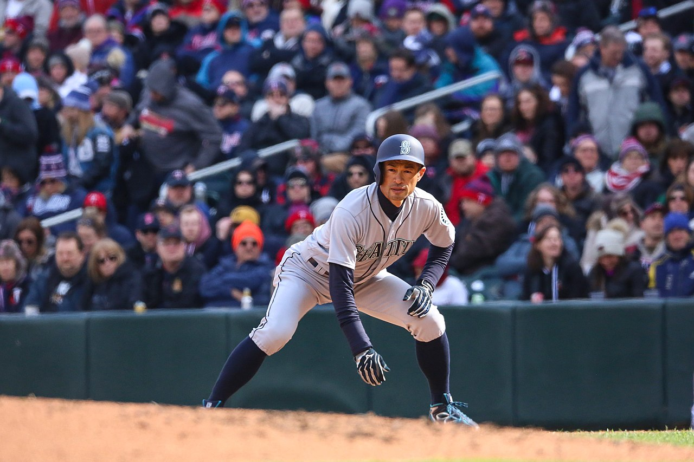
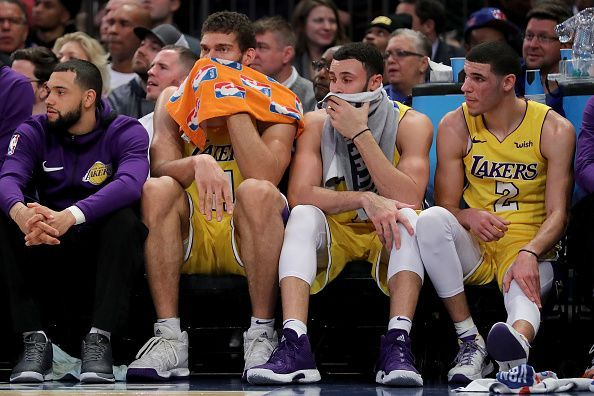

WAR Sucks
Baseball is a gorgeously paced game, to an extent that almost defies description. Its drama operates in negative space, the slow-burning tension that matures and warps and snaps into action. The ball moves faster than…


Baseball is a gorgeously paced game, to an extent that almost defies description. Its drama operates in negative space, the slow-burning tension that matures and warps and snaps into action. The ball moves faster than…
It may be the most ubiquitous game we have. Every element of the TV product, from the music to the characters to the viewing experience to the commentary, has transformed it over the decades into an American cultural…

One does not have to look far to see the effects of what is seen as increased tanking on the NBA over the last few years. Tanking, deliberately losing in order to either keep an insufficiently protected draft pick or…